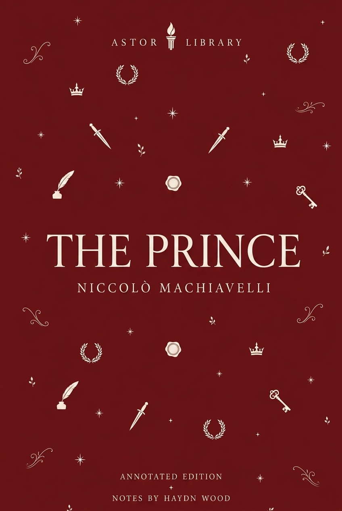
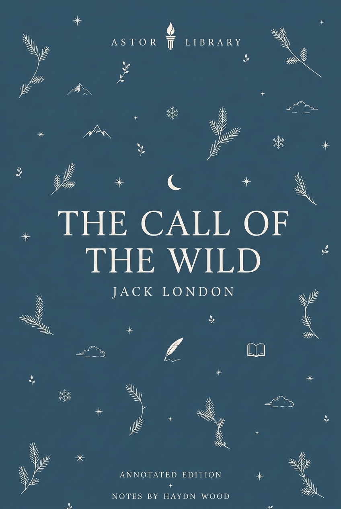

Ancient & Epic
The Aeneid, Virgil
Dryden’s 1697 translation of Virgil’s Roman epic: Troy, Aeneas, Dido, the underworld, Turnus, Augustan context, epic form, images and afterlives.
 LIBRARY
LIBRARYCatalogue
Current Astor text pages, arranged by author and period.

Ancient & Epic
Dryden’s 1697 translation of Virgil’s Roman epic: Troy, Aeneas, Dido, the underworld, Turnus, Augustan context, epic form, images and afterlives.

Shakespeare
Q1, Q2 and First Folio textual history, Amleth source tradition, revenge tragedy, Elsinore, Ophelia, stage history and screen versions.

Shakespeare
Quarto and Folio textual history, Lear’s division of the kingdom, Cordelia, Gloucester and Edgar, source material, Tate’s adaptation, RSC records and screen afterlives.

Shakespeare
1597 quarto, 1623 First Folio, More and Holinshed sources, political performance, tyranny, Lady Anne, Clarence, the princes, Bosworth, stage history and screen versions.

Shakespeare
First Folio text, Boccaccio and Painter sources, Helena, Bertram, Parolles, rank, merit, darker comedy, bed trick, production records and screen versions.

Modern
Publication history, Russian Revolution context, Stalinism, propaganda, allegory, rewritten commandments, Boxer, Squealer, stage afterlives and screen versions.

Romantic & Regency
First publication, First Impressions, Regency marriage economics, entail, free indirect style, Elizabeth Bennet, Darcy, Wickham, AQA GCSE route and adaptations.

Romantic & Regency
First anonymous publication, Elinor and Marianne, inheritance pressure, Regency marriage, emotional discipline, letters, secrecy, judgement and screen afterlives.

Romantic & Regency
Two Astor editions, 1818 and 1831 publication history, Romantic science, galvanism, layered narration, the Creature, stage and screen afterlives.

Restoration & Enlightenment
First publication, epistolary form, servant-master power, virtue, consent, class, Shamela, Anti-Pamela, Highmore paintings and afterlives.

Victorian
Serial publication, first edition, Kent and London, class ambition, crime, Miss Havisham, Magwitch, endings and screen afterlives.

Shakespeare
Early quartos, First Folio record, source material, fairy imagery, stage history, Brook's 1970 RSC production, music and screen versions.

Victorian
Publication history, Victorian London, science, secrecy, narrative method, stage versions, screen afterlives and the divided self.

Victorian
1890 Lippincott's magazine text, 1891 revised book edition, aestheticism, decadence, reception controversy, narrative doubling, portrait symbolism and stage/screen afterlives.

Victorian
Second Sherlock Holmes novel: Lippincott's publication, Mary Morstan, the Agra treasure, the 1857 colonial frame, deduction, Thames pursuit, stage history and screen versions.

Victorian
Two Astor editions, publication history, vampire folklore, documentary form, Whitby, Victorian technology, medicine, stage afterlives and screen versions.

Victorian
1897 serial, 1898 book publication, Woking and Horsell Common, Martian invasion, Heat-Ray, fighting-machines, Victorian science, imperial reversal, radio and screen afterlives.

Renaissance & Early Modern
Early print history, humanist context, dialogue form, property, governance, religion, reception and later afterlives.

Shakespeare
Print history, stage history, opera, screen versions and later responses.

American
Two Astor editions, 1851 publication history, Melville’s maritime background, the Essex disaster, Mocha Dick, whaling, image records and screen versions.

American
1903 publication, Buck, Klondike Gold Rush context, sled-dog labour, naturalism, instinct, John Thornton, image records and screen versions.